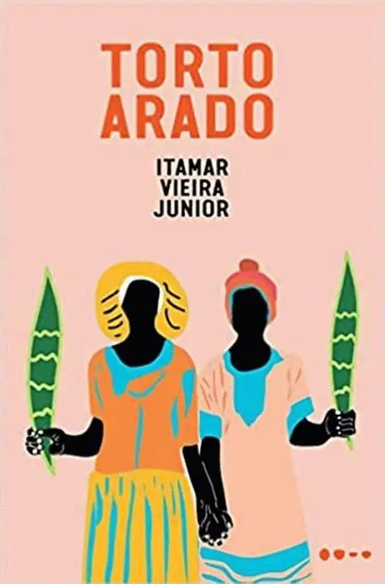

Livro de Abril
Torto Arado
O livro do mês no Clube do Livro Psicologia Literária
Uma leitura sobre terra, silêncio, ancestralidade, desigualdade e dignidade humana.
Se você não está no plano anual, ainda pode participar da experiência deste mês adquirindo o livro de forma avulsa.
Quero participar do encontro deste mês
